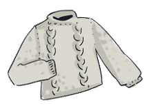
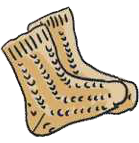
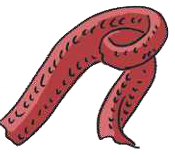

TEMATIKA 1: MATERIALET DHE PËRPUNIMI I TYRE3. Dita dhe lulja e veçantë
Puno në klasë
Ndihmë: si të punoj?
Zgjidh një kartë, pastaj zgjidh kutinë ku duhet të shkojë. Për ta nxjerrë kartën nga kutia, zgjidhe përsëri. Kur të mbarosh, shtyp butonin “Dërgo”.
1.
Vendos veshjet prej leshi në kutinë “Prej leshi” dhe veshjet prej pambuku në kutinë “Prej pambuku”.

Triko e trashë, e thurur
Çorape të trasha, të thururaFund i hollë vere
Bluzë e hollë me mëngë të shkurtra

Shall i trashë, i thururPrej leshi
Prej pambuku
Trego si i dallove.